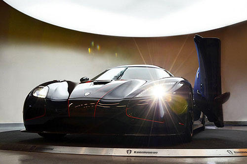

《Koenigsegg Agera R BLT》
即將登陸對岸的夢幻超跑～  大家還記不記得在有為曾經分享過的史上馬力最大車車TOP 10中，以高達1140匹最大馬力名列第六名的Koenigsegg Agera R呢？如果有機會能夠擁有這樣的夢幻超跑，你會不會希望它看起來是獨一無二的呢？最近Koenigsegg就依照買家的需求打造了一輛客製化的Agera R BLT，快跟著有為一起來看看吧！ 原汁原味的內容在這裡
|
|
|---|

|

在4,780mm的車長下，含後視鏡車寬達2,260mm的Aventador LP 700-4，採用了Lamborghini一貫的短車頭、長車尾設計，展現中置引擎超跑完美的車身比例，而寬達2,260mm的車身寬度，以及僅有1,136mm的低扁車高，則是替它塑造出極為誇張的視覺效果。
|
而且Aventador LP 700-4以全碳纖維打造了一個高剛性車艙，從車頂、車頂以及車底的主要籠型結構，都是以碳纖維材質一體打造，可讓車體僅有147.5公斤重，但卻能獲得每度35,000牛頓米的抗扭強度，為操控與性能打下紮實的根基。
打開鍘刀式車門後、座艙設計方面，Aventador LP 700-4則是走前衛風格，除了放入兩張造型誇張的筒形賽車座椅與三輻式賽車方向盤外，斜傾的中控台上還裝設有多媒體系統，能將衛星導航、影音系統、通訊系統完全整合；而儀錶板也採用全新的TFT-LCD液晶螢幕，以數位化的方式顯示多項駕駛資訊，營造出彷彿戰鬥機般的駕馭感官。
|
Aventador LP 700-4還搭載了全新6.5升V12自然進氣引擎，可在引擎轉數8,250轉時、壓榨出高達700匹的最大馬力，70.3公斤米之最大扭力則可自引擎轉數5,500轉時徹底湧現，搭配1,575公斤的乾燥車重與ISR (Independent Shifting Rods) 單離合器自手排變速系統，還能夠在2.9秒完成內、完成由靜止加速至時速100公里的衝刺，極速更上看時速350公里；而且在此同時，Aventador LP 700-4的油耗與二氧化碳排放量，也較Murciélago降低達20%，環保效能同步精進。
|
此外，為了確保強勁動力能夠傳遞至柏油路面，Aventador LP 700-4同樣採用Haldex電子控制黏性耦合4輪驅動系統，可以主動分配前、後軸的扭力輸出，輔以後輪差速器鎖定功能，以及前輪電子差速器功能，並配備有Drive Select Mode System，可整合引擎、變速系統、差速器、轉向系統等參數設定，而且駕駛人還能夠視需要、在Strada公路、Sport運動及Corsa賽道3種模式中選擇，迅速調整出最適當的車輛設定，可提供豐富的駕駛樂趣。
2012年11月、Lamborghini發表Aventador的敞篷車型Aventador LP 700-4 Roadster，車身上半部改配置兩片由RTM和Forged Composite等高科技材質所打造的碳纖維複合材料車頂，不但兼顧了設計感與性能，亦能符合強度及輕量化之需求，1片車頂之重量不到6公斤，而且這兩片輕量化車頂還能夠很簡單地手動安裝或拆卸，並能夠存放在Aventador LP 700-4 Roadster車頭行李空間內。
|
同樣配置傳統鍘刀門的Aventador LP 700-4 Roadster，車身設計也與雙門車型截然不同；為了支撐碳纖維車頂，並為乘客提供足夠的保護力，Lamborghini對Aventador LP 700-4 Roadster之後側支柱進行重新規劃，且也因為少了車頂，所以Aventador LP 700-4 Roadster引擎室兩側的進風口直接外露，呈現出與雙門車型有所不同的侵略感。
|
整個中置引擎的引擎室輪廓，在Aventador LP 700-4 Roadster上也進行了重新設計，Lamborghini為其配置了兩道原廠稱為「Spinal Column脊柱」的引擎蓋架構，並以此架構為中心，於左、右兩側配置如同高科技盔甲般的6角形邊窗，帶來與雙門車型截然不同之設計特徵。Lamborghini原廠表示，此設計目的，除了可為引擎降溫、排去雨水外，還可充分展現透明引擎蓋下這具V12引擎的美感。
|
內裝部分，Lamborghini的原廠設計師們則是替Aventador LP 700-4 Roadster換上了觸感細膩、名為Sabbia Nefertem的皮革，凸顯Sant’Agata Bolognese手工製造技藝的頂級奢華。此外，車主也能選配更有視覺侵略性的全新Dione前20吋、後21吋鍛造輕量化鋁圈 (標準版Aventador LP 700-4 Roadster的輪胎尺碼則為前：255/35R19、後：335/30R20)，能再減輕車重10公斤之多。
|
動力系統方面，Aventador LP 700-4 Roadster則是維持與Aventador LP-700-4相同的設定，同樣搭載一具排氣量6.5升的V12自然進氣引擎 (實際排氣量6,498c.c.) 與全時四輪驅動，可在引擎轉速8,250轉時、輸出高達700匹的最大馬力，70.3公斤米之最大扭力、則可在5,500轉全速湧現，並搭配7速ISR (Independent Shifting Rods) 單離合器自手排變速系統，可確保它一樣擁有蠻牛般的衝刺力道。
而且這具 60 度夾角的 V12 強力心臟，不但能讓車重 1,625 公斤、每匹馬力只需推動 2.32 公斤的 Aventador LP 700-4 Roadster，足以在短短地 3 秒完成由靜止加速到時速 100 公里的衝刺，只比車重僅 1,575 公斤、硬頂版本的 Aventador LP-700-4 慢 0.1 秒，極速在關篷時同樣可上看 350 公里，開篷時則可達 340 公里，但風壓過大、一般車主可能無法承受。
|
特別的是，Lamborghini表示、Aventador LP 700-4 Roadster所配置的這具6.5升V12引擎，也加裝了2013年式Aventador LP 700-4導入的Cylinder Deactivation System (CDS) 汽缸休止技術及Stop & Start怠速熄火控制系統，當車輛在輕負載、以及時速低於135公里時，CDS會控制V12引擎僅以一半的汽缸數運作以降低油耗，車輛停止時、Stop & Start怠速熄火控制系統則會自動熄火，減少不必要的油耗，且只要180毫秒便可重新回復運作；所以油耗與二氧化碳排汙表現都更為精進，原廠平均油耗每公升可行駛6.25公里，每公里的二氧化碳排放則為370克，與Aventador LP-700-4相同。